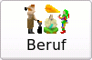
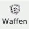

MAGUS-Style |
Für die Buttons der Buttonleiste der Notebookseite Lernschema existieren sowohl eine MAGUS-Style, als auch eine WindowsXP nachempfundene Version. |

Win32-Style |
| |
Herkunft:
Wird dieser Button betätigt, öffnet sich das Auswahlfenster der Herkunftsländer. Nach der Auswahl wird die dem gewählten
Land entsprechende Muttersprache zur Auswahlvorgeschlagen (Mit "Einschränkungen aufheben" wird eine Liste
aller Sprachen zugänglich). Im Anschluß an die Auswahl der Muttersprache wird festgelegt in welcher Region Überleben
als Unviersalfertigkeit beherrscht wird.
|
|
 |
Angeborene Fertigkeiten:
Es wird ausgewürfelt, welche angeborenen Fähigkeiten der Abenteurer besitzt. Mit der rechten Maustaste können
die angeborenen Fähigkeiten manuel ausgewählt werden. Die Auswahl erfolgt im Auswahlfenster. Mittels "Lernpunkte"
wird das Auswahlfenster wieder verlassen.
|
 |
 |
Lernpunkte würfeln:
Mit diesem Button werden die LErnpunkte ausgewürfelt. Im Anschluß daren werden die Fertigkeiten gelernt. |
|
 |
Lernpunkte editieren:
Alternativ zum Würfeln der Lernpunkte können diese mit "Lernpunkte editieren" von Hand eingegeben
werden oder bereits erwürfelte Lernpunkte können modifiziert werden. Darüberhinaus kann der W%-Wurf auf
den Beruf eigegeben werden. |
 |
|  |
Beruf:
Mit der linken Maustaste wird der W%-Wurf für den BEruf ausgeführt. Abhänging vom Wurf werden die in Frage
kommenden Berufe und dir mit ihnen assozierten Fertigkeiten im Auswahlfenster angezeigt. Die Auswahl erfolgt über die
Auswahl einer entsprechenden Fertigkeit.
Die rechte Maustaste ermöglicht die direkte eingabe eines Berufsnamen, jedoch ohne eine entsprechende
Fertigkeit gutzuschreiben. |
 |
 |
Geld:
Mit diesem Butten wird bestimmt, wieviel Geld der Abenteurer besitzt:
linke Maustaste: Der Geldbetrag wird ausgewürfelt,
rechte MAustaste: Der W&-Wurf für Geld wird kan eingegeben werden. |
 |
| |
Waffen:
Linke Maustaste: Der Wert für Waffen wird ausgewürfelt, die möglichen Waffen werden im Auswahlfenster ausgewählt.
Rechte Maustaste: Der W%-Wurf für Waffen wird eingegeben |
 |
 |
Rüstung:
Linke Maustaste: Die Rüstung wird ausgewürfelt.
rechte Maustaste Der Würfelwurf für die Rüstung wird eingegeben. |
 |
 |
Ausrüstung:
Zum Ausüben einiger Fertigkeiten wird eine spezielle Ausrüstung benötigt, Ob die Figur diese Ausrüstung besitzt
wird an dieser Stelle ausgedwürfelt. |
 |